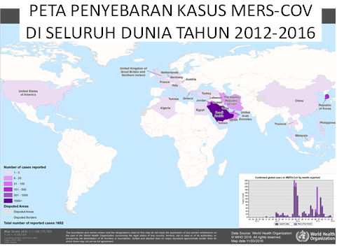

Kasus penyakit Mers-Cov yang sesuai namanya berasal dari Timur Tengah, masih menjadi penyakit yang harus diwaspadai terutama oleh Indonesia, dikarenakan banyaknya masyarakat kita yang berkunjung ke Arab Saudi dan Negara Timur Tengah lainnya setiap tahunnya. Sejak mulai mewabah pada tahun 2012 hingga saat ini (2016), jumlah kasus belum terlihat menurun. Berdasarkan data WHO sudah dilaporkan kasus confirmed sebanyak 1677 kasus, dan sebagian besar kasus dilaporkan oleh Saudi Arabia.
Pada 22 Januari 2016 otoritas kesehatan Thailand juga melaporkan 1 orang kasus Mers-cov atas seorang laki-laki yang datang dari Oman.
Antara 17 dan 25 Februari 2016, IHR National Focal Point untuk Kerajaan Arab Saudi menyatakan 7 kasus tambahan untuk penyakit Mers-Cov dan 2 diantaranya adalah petugas kesehatan, usia 24 dan 28 tahun, tanpa penyakit penyerta.
Sebelumnya Negara Qatar juga melaporkan 1 kasus Mers-Cov pada laki – laki 66 tahun yang memiliki riwayat kontak dengan Unta.
Berikut video mengenai virus MERS